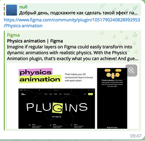
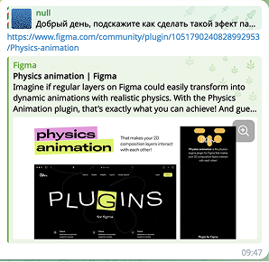

Davv · плагины
в Figma для работы
с анимацией
Моя роль:
Founder · Product Designer · Creative Director
Команда:
Я, 2 разработчика и менеджер
За что я отвечал:
- Автор идеи, концепции и продуктового направления
- Формулировал гипотезы, проверял их до разработки
- Приоритизировал задачи
- Рисовал весь визуал
- Ставил задачи разработчикам, принимал решения по UX/функциональности
- Тестировал, готовил релизы
- Отвечал за рост: контент, комьюнити, коммуникацию, маркетинг
- Делал часть простых задач (HTML/CSS)
Метрики и рост за 3 года
пользователей (установки, активны сейчас)
открытий плагинов каждый месяц
подписчиков в Instagram
Instagram — продукт компании Meta Platforms Inc., признанной экстремистской организацией в РФ.
просмотров у лучшего рилса
рекламного бюджета
С чего всё началось
Если продукт нужен мне как дизайнеру,
значит, он может быть нужен и другим
Раньше, чтобы сделать простую анимацию линий/контуров, я делал так:
рисовал в Figma → в Illustrator подготавливал файл для After Effects → анимировал → экспортировал → добавлял в Figma.
Идея: анимировать линии сразу не выходя из figma в плагине.
Так появился первый плагин — SVG Motion.
Как работает SVG Motion
Figma API отдаёт SVG
Плагин парсит SVG и находит stroke / dash‑параметры
Применяет заранее подготовленные паттерны анимации
Даёт настройки, которые можно подстроить под себя
Что видит пользователь
Пользователь открывает макет и сразу видит анимацию.
Меняя настройки, он интуитивно понимает, за что отвечает каждая из них. Это позволило начать работу без онбординга.
Мы запустились за 2 месяца
- Изучили API Figma
- Сделали плагин
- Подготовили шаблоны с примерами анимаций
- Реализовали экспорт в SVG, GIF, WebM
- Подали заявку на публикацию плагина
- Оформили страницу в Figma Community
- Сделали лендинг продукта
- Настроили страницу оплаты на Gumroad
- Запустили соцсети с примерами анимаций
Шаблоны с примерами анимаций
Спрос есть
Появились первые пользователи.
Пошли первые продажи.
Блогеры по всему миру начали снимать обзоры про SVG motion. Всё происходило органически.
Пользователи начали писать комментарии и предложения по улучшению, например — добавить MP4. Так мы начали системно собирать обратную связь.
SVG motion установлен у 138 тыс. пользователей за 3,5 года органического роста без рекламного бюджета, первый и самый популярный плагин из набора.
Следующим плагином стал Physics Animation
Проверяли интерес
Перед запуском мы публиковали Reels с результатами и писали дизайнерам — так проверяли интерес.

UI плагина
Интерфейс плагинов мы делали в самом конце, уже перед релизом. Сначала тестировали, какие настройки нужны, какие не используются. И только когда примеры анимации были готовы — делали финальный UI.

У плагина Physics Animation интерфейс получился сложнее, поэтому без онбординга тут не обошлось. Наблюдения показали, что видео-онбординг воспринимается гораздо лучше.
Быстрый рост плагина
На второй день после релиза плагин попал в топ рекомендаций Figma и быстро начал набирать установки.
Physics Animation установлен у 54 тыс. пользователей
за 3 года органического роста без рекламного бюджета
Интервью
с пользователями
Когда плагины начали набирать установки и появилось стабильное количество покупателей, мы перешли к активным пользовательским исследованиям.
Целью было понять
- В какой момент они приходят к решению о покупке
- Какую задачу они реально решают
- Где интерфейс мешает, а где помогает
Мы искали респондентов через несколько каналов
- Письма через Gumroad с коротким опросником
- Личные сообщения от пользователей
Самыми ценными оказались пользователи, которые готовы купить прямо сейчас. Именно они могли максимально точно объяснить, зачем им инструмент и какие альтернативы они рассматривали.
Интересный инсайт: значительная часть таких пользователей находила нас самостоятельно.
В ряде стран люди сталкивались с тем, что не могли оплатить плагин, так как для покупки требовалась зарубежная банковская карта, а часть пользователей писала нам с просьбой о скидке.
Мы предлагали им бесплатно ключ активации в обмен на звонок с интервью. Соглашались все.
Формат интервью
Мы пробовали разные форматы интервью, классические интервью по списку вопросов и более свободный формат дружеской беседы.
Со временем стало понятно, что именно этот формат дружеской беседы даёт больше глубинных инсайтов.
Во время таких интервью мы
- Разговаривали с пользователем
- Просили комментировать действия вслух
- Наблюдали, как он пользуется плагином в реальном времени
- Фиксировали моменты, где ожидание не совпадает с результатом
✖ Классические интервью по списку вопросов
- Пользователи зажимаются
- Стараются дать «правильный ответ»
- Угадывают ожидания интервьюера
✓ Дружеская беседа
- Пользователи более открытые
- Легко показывают какие действия пробует первыми
- Какие обходные пути придумывает
- Лучше понимаешь мышление пользователя
Один из показательных примеров дружеской беседы В одном из интервью пользователь подробно описал, что в своей работе он не хочет просто двигать объекты, а хочет менять их форму, управляя координатами якорных точек. Так родился новый плагин Shape move.
Инсайты исследований
- Пользователи теряются, если настроек слишком много
- Им нравится быстро видить результат
- Документацию почти никто не читает
- Видео-онбординг и визуальные примеры работают лучше текста
- Увидели обходные пути и баги
Когда пользователи приходят к решению о покупке
В первом сценарии решение о покупке возникало в момент, когда пользователь находил пример анимации, подходящий для текущего проекта. Возможность применить эффект в макете и сразу проверить его на своей задаче становилась ключевым триггером покупки.
Во втором сценарии. Пользователь видел видео блогера, который показывал и рекомендовал плагин. В ходе интервью мы заметили, что по этому пути чаще всего приходили начинающие дизайнеры.
Основная идея
Пользователь создаёт два или больше фреймов с вектором, меняет координаты точек и получает плавную анимацию перехода формы.
Такой подход помогал анимировать иконки, шрифты и микроанимацию в интерфейсах.
Экспорт в формате SVG
Экспорт в формате SVG
Экспорт в формате SVG
Экспорт в формате SVG
Используя настройки смещения и задержки движения каждого отдельно элемента, можно добиться интересных эффектов.
Shape move установлен у 29 тыс. пользователей
за 2 года органического роста без рекламного бюджета
Исследование
монетизации
и конверсии
Цена
Пользователи писали, что цена кажется высокой.
Логичное ожидание было таким: ниже цена → больше покупок.
| Период | Цена | Просмотров в магазине | Покупки | Прибыль |
|---|---|---|---|---|
| 1 месяца | 9$ | 749 | 107 | 963$ |
| 1 месяца | 39$ | 772 | 102 | 3 978$ |
Изменение цены почти не повлияло на количество покупок.
Вывод: решение о покупке принималось не из-за цены.
Подписка vs разовая покупка
Мы внедрили модель подписки на плагины и сравнили её с разовыми покупками.
| Период | Цена | Просмотры | Покупки | Отмена | Прибыль |
|---|---|---|---|---|---|
| 3 месяца | 8$/mo | 2 214 | 430 | ≈78% | ≈4 953$ |
| 3 месяца | 39$ | 1 989 | 396 | - | 15 444$ |
Результат
- Разовые продажи приносили больше денег
- Подписка вызывала больше сомнений и сопротивления
- Пользователи воспринимали плагины как формат «купить и владеть»
Путь к оплате
Типичный сценарий выглядел так:
Узнал про плагин → Установил плагин → Сделал анимацию в плагине → Экспорт (требуется Pro-аккаунт) → Переходит на сайт продукта→ Корзина Gumroad → Оплачивает → Активирует ключ →...
Если из цепочки убрать сайт, конверсия падает на ≈30%.
Тестирование сайта
Мы тестировали разные версии страницы продукта
- Разные структуры
- Разные формулировки
- Разный визуальный стиль
- Классические лендинги с call-to-action

Ожидание: «правильный» лендинг повысит конверсию.
Фактический результат: конверсия не менялась.
Вывод: пользователь принимает решение о покупке ещё внутри плагина,, когда видит результат своей работы. Сайт не продаёт — он подтверждает уже принятое решение.
Влияние изменений UI на конверсию
Мы тестировали не только цену и путь к оплате, но и сам UI продукта
- Разным набором шаблонов анимаций
- Перестановкой и группировкой шаблонов на основе рейтинга
- Радикальными изменениями визуального стиля UI
Результат: ни одно из этих изменений не оказывало заметного влияния на продажи.
Фичи, которые повлияли на конверсию
Это заняло очень много времени разработки, но мы добавили в SVG motion и Physics animation экспорт в формат Lottie — это была самая частая просьба пользователей.
Результат: конверсия в покупку выросла примерно на 15%.
На конверсию влияли не косметические улучшения, а функциональные возможности.
Маркетинг, рост
и развитие продукта
Весь рост продукта строился вокруг одного вопроса:
как продукт может распространяться сам?
Стартовый канал роста
Первым и ключевым каналом роста стала Figma Community.
Именно там дизайнеры и блогеры начали узнавать о плагинах.
Большинство публикаций и обзоров не инициировались нами напрямую. Авторы контента находили плагины сами, дизайнеры рекомендовали их друг другу в чатах и сообществах.
 

Короткие видео — основной двигатель роста
Демонстрация возможностей плагинов запускали цепную реакцию
- Повторение формата блогерами
- Собственные версии и разборы
- Пародии
Чем лучше видео «залетало», тем больше появлялось производного контента. Для нас это была полностью органическая и бесплатная реклама.
Со временем блогеры начали повторять контент друг за другом, фактически распространяя продукт без нашего участия.
Работа с блогерами
Заметив интерес со стороны контент-креаторов, мы начали предлагать сотрудничество.
- Небольшие блогеры охотно соглашались на бартер
- Мы предоставляли ключи доступа
- Блогеры снимали видео с реальным использованием продукта
Результат: контент выглядел нативно и не воспринимался как реклама.
Работа с блогерами
Мы также тестировали классические механики роста «процент с продаж». Результат: существенного роста продаж это не дало.
Плагины для образования
Нам писали блогеры и просили скидки для студентов их курсов. Также нам написал университет LUCA | School of Arts, который хотел добавить плагины в свою программу обучения. Мы никогда не отказывали давать скидки или ключи для обучения.
Практический инсайт
Регулярная съёмка коротких видео с возможностями плагинов оказалась самым устойчивым и каналом роста. Именно такой контент стимулировал пользователей и блогеров продвигать продукт самостоятельно.
Основная идея
Плагин автоматически упорядочивает слои в 3D-перспективе и позволяет легко преобразовать любые движения мыши в анимацию параллакса.
Плагин быстро набрал свою популярность из-за свой простоты и эффектности.
Parallax установлен у 65 тыс. пользователей
за 2 года органического роста без рекламного бюджета
Экосистема
плагинов
Ключевой принцип: результат, созданный в одном плагине, должен быть переиспользуемым в других.
Пример реального сценария
- Пользователь настраивает анимацию в SVG Motion
- Затем открывает Parallax
- Видит, что созданная анимация продолжает работать в новом контексте — уже как часть параллакс-сцены или композиции
Для пользователя это ощущалось как единый инструмент.
Продуктовый эффект экосистемы
- Чаще покупали несколько плагинов
- Выбирали весь набор целиком
Экосистема усиливала ценность каждого отдельного продукта за счёт их совместного использования.
Экосистема создавала и дополнительные сложности
- Не в каждый плагин можно было корректно встроить анимации из других
- Изменения в одном плагине могли приводить к тому, что анимации переставали корректно работать в других
Это требовало: постоянной поддержки совместимости и компромиссов между гибкостью и стабильностью.
Вывод: экосистема плагинов стала мультипликатором ценности продукта, но одновременно повысила сложность архитектуры и сопровождения.
Ограничения, в которых существует продукт
Продукт существует внутри чужой платформы и напрямую зависит от её решений.
Через API Figma мы получали только экспортированный SVG — без информации о том, как он был создан.
Один и тот же визуально идентичный макет в Figma мог превращаться в принципиально разные SVG
- Разная структура слоёв
- Разные типы объектов
- Различная вложенность
- Маски, группы, векторы
Для пример один и тот же эллипс для пользователя выглядит одинаково, но для движка плагина это были совершенно разные входные данные.
Последствия для движка
- Сложной и хрупкой логике парсинга SVG
- Большому количеству edge-кейсов
- Багам, которые невозможно воспроизвести в других файлах
- Ситуациям, когда «у пользователя не работает», а в тестах всё корректно
При этом пользователь видел только результат, но не ограничения платформы, которые к нему привели.
Недостаточно контекста действий пользователя
Плагин не имел информации о том, какие действия пользователь совершал в Figma до его запуска.
Пользователь в одном фрейме поворачивает объект на 135°, но плагин не знает, был ли объект повернут трансформацией или изменением координат якорных точек.
Из-за этого одно и то же визуальное состояние могло интерпретироваться по-разному.
ожидает увидеть
видит на самом деле
Figma регулярно меняла API и правила использования
На раннем этапе мы использовали FFmpeg:
- Быстрый рендер
- Экспорт в MP4
Позже Figma запретила использование FFmpeg.
Экспорт видео стал возможен только в WebM.
Это означало
- Переписывание части движка
- Потерю привычного пользователям формата
- Необходимость объяснять новые ограничения
Из-за внезапных изменений API, о которых Figma не уведомляла, мы периодически сталкивались с негативной обратной связью от пользователей.
Влияние Google Chrome и изменения SVG-рендера
Ещё одной сложностью стали изменения в браузерных движках.
В частности, Google Chrome изменил поведение SVG-рендера. Это приводило к ситуациям, когда анимация корректно работала в одном браузере, но вела себя иначе в другом.
В результате нам пришлось
- Переписать весь движок
- Уйти от transform к CSS-анимациям
Пользователь создает фреймы с векторными фигурами, копирует его и меняет координаты якорных точек. Затем выделяет два фреймы и открывает плагин.
Shapelax — это смесь плагинов Shape Move и Parallax.
Самое большое количество просмотров
Короткое видео с этим плагином набрало самое большое количество просмотров.
Видео с эффектом 3D, работающим от героскопа телефона, собрало 1,8 млн просмотров и 14 тыс. новых подписчиков
Shapelax установлен у 7 тыс. пользователей
Рост за 1 год. Несмотря на небольшое количество установок этот плагин с самой большой конверсией.
PS. К выходу этого плагина Figma убрала обязательную установку плагинов,
теперь плагинами можно пользоваться без установки. Это сказалось на количестве установок.
Дизайн-система
и внедрение AI
в разработку
Когда DAVV перестал быть «одним плагином» и превратился в набор продуктов, возникла системная проблема.
Любое изменение — скидка, модальное окно, правки в парсере или UI — нужно было вручную вносить в каждый плагин отдельно. Это плохо масштабировалось и замедляло развитие продукта.
Архитектура и договорённости
Совместно с разработчиками мы
- Согласовали единый архитектурный подход,
- Договорились, что дизайн и код должны зеркалить друг друга.
Дизайн-токены и примитивы
- Цвета поверхностей
- Обводки
- Типографику
- Отступы и состояния
- И другое
Далее мы договорились о чёткой иерархии
- Атомы (иконки, свичи, радиокнопки, чекбоксы)
- Компоненты (собранные из атомов)
- Виджеты (логически законченные блоки UI)
- Эмулятор плагина (собранный из виджетов)
Если компонент содержал вложенные компоненты, он автоматически переходил на следующий уровень абстракции.
Та же структура, те же названия и та же вложенность использовались и в дизайне, и в коде.
Результат внедрения дизайн-системы
- Любое изменение UI автоматически применялось ко всем плагинам
- Снизилось количество рассинхронов между дизайном и реализацией
- Ускорилась разработка новых продуктов
- Упростилось масштабирование экосистемы
Внедрение AI в процесс разработки
Разработчик Алексей описал набор правил и соглашений для работы с AI в Cursor, включая:
- Структуру компонентов
- Архитектурные ограничения
- Требования к неймингу
- Правила вложенности
Благодаря этим правилам я смог:
- Самостоятельно собирать прототипы плагинов сразу внутри Figma
- Быстро проверять идеи без участия разработки
- Показывать рабочие примеры пользователям
- Принимать продуктовые решения на основе фидбэка
Это сократило время от идеи до тестируемого прототипа и позволило быстрее валидировать гипотезы.
Проект вызвал
интерес Adobe
и Awwwards
С нами связалась команда Adobe.
Инициатором диалога стал Alex Castanheira, на тот момент отвечавший за часть продуктов Creative Cloud.

Что обсуждали
- Возможность создания инструментов, близких по духу к DAVV
- Развитие motion-инструментов для комьюнити Adobe
- Интеграцию нашего подхода в их экосистему
Мы провели три встречи, на которых:
- Показывали, как работают плагины DAVV
- Обсуждали, как их можно интегровать в Adobe
- Разбирали ограничения платформ и API
Итоги обсуждений
- Существенные ограничения в API
- Недостаточная гибкость платформы для реализации подобных инструментов
В результате Adobe приняла решение взять паузу на развитии API. Интерес к продуктам DAVV был подтверждён.
Нам также написали из Awwwards.
Они предложили сотрудничество. Правда наша встреча так и не состоялась.
После они опубликован на сайте Awwwards плагин Parallax для вдохновения и экспериментов с motion-дизайном, что дополнительно усилило узнаваемость продукта в профессиональном сообществе.

Результаты
Во время работы в крупных командах мне не всегда удавалось чётко увидеть вклад собственных решений в общий результат. Этот проект стал точкой валидации моих продуктовых и дизайнерских гипотез — они оказались востребованы и принесли измеримый результат.
Метрики и рост за 3 года
пользователей (установки, активны сейчас)
открытий плагинов в месяц
подписчиков в Instagram
Instagram — продукт компании Meta Platforms Inc., признанной экстремистской организацией в РФ.
просмотров у лучшего рилса
рекламного бюджета